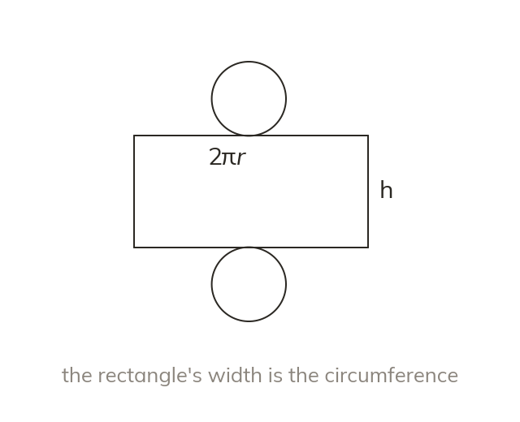

The net of a cylinder
A cylinder's net is two circles and one rectangle. The rectangle wraps round the circles. So its width is the circumference,
A cylinder's net is two circles and one rectangle. The rectangle wraps round the circles, so its width is the circumference,